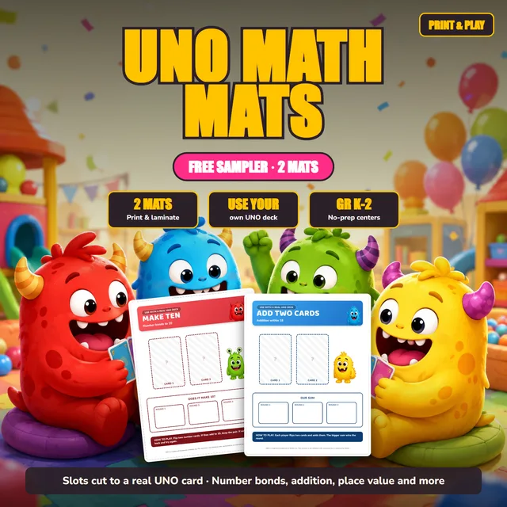

Free file
FREE UNO Math Mats
What it is
Two printable math mats to use with a real UNO deck: Make Ten for number bonds to 10, and Add Two Cards for addition within 18. A rules page gives setup steps plus an easier and a harder version.
- Time
- About 30 minutes
- Best for
- Kindergarten through grade 2
- Prep
- Have one UNO deck ready for each group of two to four students, and print the mats on card stock.
- Grades
- Kindergarten, 1st Grade, 2nd Grade
- Pages
- 4
- Type
- Games
It opens on Teachers Pay Teachers, where the file lives. A free TPT account is needed to download.
Ways to use it
- Set up the Make Ten mat at a center: students flip two number cards and keep the pair if the total is 10.
- Give the Add Two Cards mat to students ready for bigger sums, where each player flips two cards and adds them.
- Laminate the mats or slide them into sleeves so students can write in the round boxes with dry erase markers and reuse them.